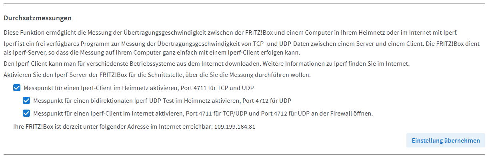

References
- So testen Sie die Netzwerkbandbreite mit iPerf3
- FRITZ!Box: Durchsatz des WLAN mit iperf messen
- Netzwerk-Performance mit in Fritzbox integriertem Iperf testen
iperf3 als Server auf port 7575 starten
fleishor@openmediavault:~ $ iperf3 -s -p 7575
-----------------------------------------------------------
Server listening on 7575 (test #1)
-----------------------------------------------------------
iperf3 auf dem Client laufen lassen
pi@docker:~ $ iperf3 -c openmediavault.fritz.box -p 7575
Connecting to host openmediavault.fritz.box, port 7575
[ 5] local 192.168.178.19 port 48214 connected to 192.168.178.20 port 7575
[ ID] Interval Transfer Bitrate Retr Cwnd
[ 5] 0.00-1.00 sec 109 MBytes 918 Mbits/sec 0 419 KBytes
[ 5] 1.00-2.00 sec 111 MBytes 930 Mbits/sec 0 419 KBytes
[ 5] 2.00-3.00 sec 112 MBytes 937 Mbits/sec 0 468 KBytes
[ 5] 3.00-4.00 sec 111 MBytes 931 Mbits/sec 0 520 KBytes
[ 5] 4.00-5.00 sec 111 MBytes 929 Mbits/sec 0 520 KBytes
[ 5] 5.00-6.00 sec 112 MBytes 939 Mbits/sec 0 710 KBytes
[ 5] 6.00-7.00 sec 108 MBytes 902 Mbits/sec 210 510 KBytes
[ 5] 7.00-8.00 sec 111 MBytes 933 Mbits/sec 70 414 KBytes
[ 5] 8.00-9.00 sec 110 MBytes 923 Mbits/sec 0 450 KBytes
[ 5] 9.00-10.00 sec 112 MBytes 944 Mbits/sec 0 450 KBytes
- - - - - - - - - - - - - - - - - - - - - - - - -
[ ID] Interval Transfer Bitrate Retr
[ 5] 0.00-10.00 sec 1.08 GBytes 929 Mbits/sec 280 sender
[ 5] 0.00-10.01 sec 1.08 GBytes 925 Mbits/sec receiver
iperf Done.
pi@docker:~ $
iperf auf der Fritzbox aktivieren
Aufpassen, iperf(!) nicht iperf3
Support page aufrufen: http://fritz.box/#support

iperf auf dem Client laufen lassen
pi@docker:~ $ iperf -c router.fritz.box -p 4711
------------------------------------------------------------
Client connecting to router.fritz.box, TCP port 4711
TCP window size: 187 KByte (default)
------------------------------------------------------------
[ 3] local 192.168.178.19 port 40576 connected with 192.168.178.1 port 4711
[ ID] Interval Transfer Bandwidth
[ 3] 0.0-10.0 sec 95.2 MBytes 79.9 Mbits/sec
pi@docker:~ $ iperf -c 192.168.178.2 -p 4711
------------------------------------------------------------
Client connecting to 192.168.178.2, TCP port 4711
TCP window size: 212 KByte (default)
------------------------------------------------------------
[ 3] local 192.168.178.19 port 37968 connected with 192.168.178.2 port 4711
[ ID] Interval Transfer Bandwidth
[ 3] 0.0-10.0 sec 111 MBytes 92.5 Mbits/sec
pi@docker:~ $